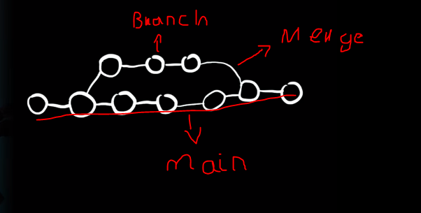

GIT AND GITHUB
git config --global. Hace que la configuración a efectuar se haga de manera global y no por archivo
git config --global user.name "Santiago Arcila Angel" configura el nomrbe de git
git config --global user.email sangel.phoenix@gmail.com configura el gmail del git
git config --global core.editor "code --wait" code --wait es para que el terminal se quede esperando que cerremos el
editor de texto
git config --global -e permite ver nuestro archivo de configuracion global en vscode
git config --global core.autocrlf true Ajusta los caracteres especiales entre MAC,linux y Windows en lso
repositoriso de varios operadores
git config -h muestra toda la configuració nde git
Comandos de git
ls permite listar todos los archivos y carpetas que hay en un directorio. Sino hay un directorio no va a mostrar las
carpetas listadas
ls -a muestra absotulamente todo lo que hay dentro del directoio. Oculto o no, en ese caso .git
pwd permite conocer en que directorio se esta en este momento
cd /*direccion */ permite mover el directorio o carpeta al espacio en que se desea trabajar. Para vovler una capreta
atras es ..
mkdir permite crear un directorio en la ruta en la que se este para almacenar x cosa
git init Inicia un repositorio en git, con los datos del directorio actual
aparece el siguiente Initialized empty Git repository in
C:/Users/HP_EliteDesk/Documents/Programacion/GIT/miweb/.git/
ese .git indica que el directorio se encuentra oculto. Dejara de aparecer en ls
AL listar el archivo .git se muestran todos los archivos que se utilizan en git para gestionar los proyectos.
Eso es un detalle de implementación. Aqui se van a implmentar las distintas ramas de nuestro codigo, las distintas
ramas y los commit
.git es una carpeta que siempre se ignora y no se comparte entre repositorios al hora del grupo de trabajo
Flujo de Trabajo
- Computador
- Stage
- Commit
- Server
Computador
Podemos modificar, eliminar y agregar todos los archivos que queramos en nuestro computador. Sin embargo eso no se
guarda en el repositorio. Desde esta fase se agregan los cambios que nosotros queremos hacer en el proyecto
Stage
Etapa intermedia en la que se indican los cambios que nosotros vamos a realizar para que pasen al repositorio. No
pasan todos, solamente los cambios que seleccionemos.
En la etapa de stage podemos dejar cargados los archivos sin subirlos y también ir sacando los que no queremos. En
esta etapa se escoge todo lo que se va a subir al repositorio
COMMIT
Cuando se pasan los cambios de stage a commit. Se comprometen estos archivos y son muy dficiles de modificar
Server
Los cambios que se comprometen en git, por lo general se suben a un servidor que puede ser GITHUB y demás
También se pueden eliminar archivos, para eso se elimina del computador, luego de stage se pasa a eliminar y luego
con commit y al server
Comandos
code . el punto quiere decir que quiere abrir la carpeta en la cual un ose encuentra en code
git status Muestra el estado actual de nuestro repositorio.
Dice que no hay ningun commits y se encuentran untracked files. Es decir, git no sigue todos los archivos que
nosotros tengamos; es decir, no pone todos los archivos en el repositorio.
- Se puede poner el nombre del archivo
- Se pone # . tipo de documento, ejemplo #.txt agrega todos los documentos que tengan esa extension
- . agrega todos los archivos que aparezcan en el listado del directorio (Mala práctica)
- Poner 2 3 archivos. se separan por espacios
git add agrega los archivos que nosotros queramos y escojamos a la etapa de stage.
Al ejecutar git status dice que no se encuentra ningun comit y que ya estan listos los archivos para ser un
commit.
Los archivos que se encuentren en color verde, dirán que estan en una etapa de stage, es decir, estan
listos para ser comprometidos.
Cuando nosotros modificamos un archivo, nos aparece el archivo sin modificar y nos indica que tiene una modificación
que no esta en etapa de stage.
Para modificar el archivo y ponerle la actualización utilizamos git add.
Lo que se sube no es el archivo en si mismo, sino la actualización de este
Comprometer un trabajo
Existen dos formas de comprometer un trabajo
La mejor forma para comprometer un trabajo es con
git commit -m "Mensaje del commit" Esto agregará todo lo que este en etapa de stage y lo comprometa, los mensajes
diran los cambios del commit.
Si se actualiza con git status, aparecera que no hay ningun archivo disponible para hacer commit
git commit solom abre el editor de texto que tengamos configurado. Nos muesta cual es el archivo modificado y nos
indica que mostremos el mensaje que posee ese commit
Eliminar archivos
rm archivo2.txt elimina el archivo que se especifique o todos o un archivo con x extension.
El archivo aparece borrado pero toca subirlo al stage. Aparece que tenemos la accion de eliminar el
archivo2.txt y que esta en etapa de stage. Se hace un commit y el archivo se elimina
Git posee un comando para que cuando uno elimine el archivo se vaya directamente a la etapa de stage
git rm archivo2.txt elimina el archivo y pone la accion en stage en stage
Restaurar acciones
git restore --staged archivo1.txt. Restablece el archivo en su cambio de stage. Es decir, lo quita de stage y su
accion pero no se restablecen los cambios en el directorio. No se recupera el archivo
git restore permite restaurar un archivo en el directorio
Cambiar el nombre
mv origen destino mv archivo1.txt archivo.txt. mv es una funcion que permite cambiar el nombre del archivo o
carpeta. Se agrega el archivo a stage apra que aparezca la accion de que se renombra el archivo
git mv archivo.txt archivo1.txt git mv cambia el nombre y lo agrega de una vez a stage
Ignorar archivos
Se hace para tener archivos de configuracion especificos para nuestra maquina o cosas de nuestra maquina
Se va al editor de codigo, se crea un archivo que se llame .gitignore y se pone .env o node_modules/ o lo que se
quiera ignorar.
Aun aspi aparecera el archivo .gitignore pero ya no lso que se especificaron a ignorar. El archivo de git ignore
se manda a stage y se compromete, queda inmediatamente oculto.
Ver el estado en git
git status -s muestra una m si el archivo fue modificado. Si esta en verde que ya esta en stage.
Muestra ?? para un archivo que no ha sido subido a stage. Es decir, no ha sido agregado apra que git le haga
seguimiento, depsués de agregarlo aparece una A de agregado
git diff nos permite ver los cambios sobre los archivos y los cambios anteriores.
Se quita una linea, poruqe se elimina y vuelve a crear para que aparezca el salto de linea
@@ -1 +1,3 @@ Dice que lo que habia en el documento comenzo desde la linea 1 y que los nuevos cambios inician desde
la linea 1 y agrega hasta la 3. Se sale con la letra q
git diff --staged muestra los cambios que ya se pasaron a la etapa de staged
La primera version de git diff, muestra los cambiso que aun no se han subido a stage.
La segunda version de git diff --staged muestra loscambios que ya se subieron a la etapa de staged
Hsitorial de todo el repositorio
git log muestra todos losdatos de quien hizo el commit con todo
git log --oneline muestra el historial de commits con la descripcion del commit y un identificador del mismo, lo
hace más simple
Branch Ramas

Los branches es una rama que permite bifurcar el código, es deicr, extraer una parte para que no tengamos que ver
todo lo que hace el resto de lequipo en nuestro git.
Eso genera una rama que nosotros trabajmos y editamos, después hacemos un merge (fusion) al a rama principal
(main) e inyectamos nuestro codigo
git branch permite verificar en que rama nos encontramos. Por lo general es la rama main, así que no sale master
sino main que significa rama central, en todos los proyectos que creemos será así casi por defecto.
checkout -b nombre-rama checkout -b ramab nos permite crear una rama.
Features/nombrefuncion
codigo del ticket
cat archivo2.txt permite ver lo que hay dentro de ese archivo
checkout nombrerama checkout master es al forma de ir a otra rana
Que uno realice un stage en una rama no significa que se una a la principal
Para unir los cambios de una rama, toca ir a la rama principal. En esta rama principal hacemos el proceso merge
git merge nombrerama git merge ramab trae la rama junto con los cambios incluidos
GITHUB
git remote add origin https://github.com/SantiagoPhoenix/miweb.git
git remote nos sirve para indicar que es un servidor remoto en el cual vamos a subir nuestros cambios. add origin es
a donde tenermos que ir a obtener nuestro codigo y a donde debemor ir a obtener los cambios que obtenemos. Por
ultimo la url indica de donde vamos a obtener nuestro codigo.
git push -u origin main Git
git push es el comando apra que podamos subir nuestros cambios con respecto a la rama que estamos trabajando.
-u indica que se quiere crear la rama y origin que la rama se llame main
Al hacer el stage y el commit con git push subimos los cambios al repositorio
Hola